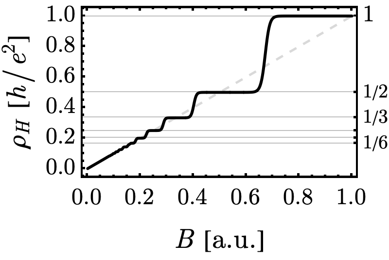

4.3.1 Cyclotron Motion#
Prompts
What does classical Lorentz dynamics predict for Hall response as magnetic field \(B\) is varied?
Why does cyclotron motion give an energy-independent timescale \(\omega_c = qB/m\), and what physical intuition does that provide?
In a classical metal, should Hall observables vary continuously or discretely with \(B\)? Why?
Experiments show Hall plateaus in \(\rho_{xy}(B)\). Which specific classical assumptions fail?
Which two scales from this lecture become the input to the quantum theory in §4.3.2?
Lecture Notes#
Overview#
Classically, a magnetic field bends an electron’s trajectory into a cyclotron orbit of any arbitrary radius. When an electric field is applied, these orbits simply drift, resulting in a smooth, linear Hall response where \(\rho_{xy} \propto B\).
The integer quantum Hall effect shatters this expectation. At low temperatures and in strong magnetic fields, the Hall resistivity locks onto precise plateau values: \(\rho_{xy} = h/(\nu e^2)\) for \(\nu = 1, 2, 3, \dots\). These values are quantized to fundamental constants, robust against material disorder, and reproducible to parts per billion—so exact that they now define the international standard for the Planck constant. How can such absolute precision emerge from the chaotic motion of electrons in a real, “dirty” material? To solve this puzzle, let us first set the stage by re-examining the classical framework.
Classical baseline: cyclotron motion#
For a charge \(q\) and mass \(m\) in uniform field \(\boldsymbol{B}=B\hat{z}\),
In-plane motion is circular with
Cyclotron frequency and radius
\(\omega_c\) is independent of kinetic energy.
\(r_c\) depends on kinetic energy through \(v_\perp\).
The classical cyclotron motion is essentially two harmonic oscillators in disguise. If we examine the kinematics, we find that the velocity components satisfy \(\ddot{v}_x = -\omega_c^2 v_x\) and \(\ddot{v}_y = -\omega_c^2 v_y\)—two independent oscillations coupled \(\pi/2\) out of phase. Since the harmonic oscillator is the canonical example of quantization in quantum mechanics, we should expect the cyclotron energy to be restricted to a discrete ladder of levels with spacing \(\hbar\omega_c\). This theoretical proposal finds a striking experimental test in the Hall effect.
Derivation: Cyclotron Frequency and Radius
For \(\boldsymbol{B}=B\hat{z}\), the Lorentz equation \(m\dot{\boldsymbol{v}}=q\boldsymbol{v}\times\boldsymbol{B}\) in components reads
so the motion along \(\hat{z}\) is uniform — all the interesting dynamics is in the \(xy\)-plane. Defining
the in-plane equations become \(\dot{v}_x = \omega_c v_y\) and \(\dot{v}_y = -\omega_c v_x\), equivalent to the harmonic-oscillator equation \(\ddot{v}_x = -\omega_c^2 v_x\). The general solution is
a uniform rotation of the velocity vector at angular frequency \(\omega_c\). Integrating once gives the trajectory
where the radius
is set by the perpendicular speed \(v_\perp = \sqrt{v_x^2 + v_y^2}\), and \((X, Y)\) is the guiding center — a constant of motion: the centre of the circular orbit. The orbit is therefore a circle of radius \(r_c\) around \((X, Y)\), traversed at fixed angular speed \(\omega_c\) regardless of \(v_\perp\).
Two consequences worth flagging:
\(\omega_c\) is energy-independent. It depends only on the charge-to-mass ratio and \(B\). Every orbit at the same field completes a full cycle in the same period \(T_c = 2\pi/\omega_c = 2\pi m/(qB)\), regardless of speed.
\(r_c\) encodes the energy. Since the perpendicular kinetic energy is \(E_\perp = \tfrac{1}{2}mv_\perp^2 = \tfrac{1}{2}m\omega_c^2 r_c^2\), larger orbits hold more energy. Two particles at the same \(B\) and different speeds trace different-sized circles but at the same angular frequency.
The energy-independence of \(\omega_c\) together with the closed circular orbits is exactly what makes Bohr-Sommerfeld quantization (§3.3.3, applied in §4.3.2) yield the equally-spaced Landau-level ladder \(E_n = (n+\tfrac{1}{2})\hbar\omega_c\).
Classical Hall effect and its expectation#
With current along \(x\) and \(\boldsymbol{B}\parallel \hat{z}\), carriers are deflected transversely until electric and magnetic forces balance. For Hall-bar geometry here, \(n\) denotes the 2D carrier density (sheet density). This yields
Classical Hall response (same observable as experiment)
The transverse component of the resistivity tensor — the Hall resistivity — is
In 2D, \(\rho_{xy}\) already has units of resistance (ohms), so it can be compared directly with the measured plateau resistances without any geometric factor.
Classical prediction: \(\rho_{xy}(B)\) is a smooth straight line in \(B\) (continuous, no plateaus).
Derivation: from force balance to \(\rho_{xy}^{\mathrm{cl}}(B)\)
In steady state, the transverse Lorentz and electric forces on a carrier of charge \(q\) cancel:
With current density \(j_x = nq v_x\), eliminate \(v_x\) to get
The ratio is the Hall resistivity directly:
The sign of \(E_y/j_x\) flips with the sign of \(q\), so Hall measurements diagnose carrier type (sign conventions explored in homework). What matters for comparison with experiment is the magnitude: \(\rho_{xy}^{\mathrm{cl}}(B)\) is linear in \(B\) with no plateaus.
This gives a direct one-to-one comparison with the quantum Hall data for the same observable \(\rho_{xy}(B)\).
Experimental fact: Hall plateaus#
At low temperature and strong magnetic field, experiments show
{kind=link}

Fig. 22 Integer quantum Hall signature: measured Hall response develops plateaus instead of the classical smooth trend as \(B\) is increased.#
Integer quantum Hall observation
The measured Hall resistivity takes plateau values
With the same carrier density symbol \(n\), define the continuous filling variable
The plateau label \(\nu\) is an integer (set by which Landau levels are filled), while \(\tilde{\nu}(B)\) varies continuously with \(B\).
So \(\rho_{xy}(B)\) is not the smooth line \(B/(nq)\): as \(B\) changes continuously, \(\tilde{\nu}(B)\) changes continuously, but the measured Hall response stays on integer-labeled plateaus and jumps between them.
For the same observable \(\rho_{xy}(B)\), experiment shows a discrete structure (plateaus with jumps), whereas classical theory predicts a continuous straight line.
Why classical theory is insufficient#
Classical Hall theory is not wrong everywhere. In fact, it works very well at room temperature and moderate magnetic fields. The issue is regime: at low \(T\) and high \(B\), quantum structure that is normally washed out becomes unavoidable.
Why low-\(T\), high-\(B\) changes the game
Use what you already know from Chapter 3 (Bohr-Sommerfeld): closed cyclotron motion is exactly the kind of orbit that can be quantized. The key is an explicit energy-scale comparison:
If \(\Delta E \ll k_B T\) (high \(T\) and/or weak \(B\)), level spacing is thermally smeared, and classical continuous Hall response is a good approximation.
If \(\Delta E \gtrsim k_B T\) (low \(T\) and/or strong \(B\)), level spacing is resolved, and transport is governed by discrete Landau-level filling.
So the statement is not “classical Hall is wrong,” but “classical Hall is an approximation whose validity is controlled by the ratio \(\Delta E/(k_B T)\).”
The quantitative derivation of this picture is done in §4.3.2 and §4.3.3.
Summary#
Classical Lorentz dynamics gives circular cyclotron motion with \(\omega_c=qB/m\) and energy-dependent radius \(r_c\).
Classical Hall theory predicts a continuous straight-line Hall resistivity \(\rho_{xy}^{\mathrm{cl}}(B)=B/(nq)\).
Experiments show \(\rho_{xy}(B)\) plateaus at \(h/(\nu e^2)\) with jumps as \(B\) changes, not a continuous line.
Therefore classical theory is not enough; quantized Landau physics is required.
See Also
4.1.3 Gauge Invariance: Minimal coupling and gauge-covariant derivatives
4.3.2 Landau Quantization: Quantum treatment of cyclotron orbits and Landau levels
4.3.3 Quantum Hall Effect: Integer and fractional Hall states (future section)
Homework#
1. Cyclotron drift in crossed fields. A particle of charge \(q\) moves in uniform fields \(\boldsymbol{B} = B\hat{z}\) and \(\boldsymbol{E} = E\hat{x}\).
(a) Solve \(m\dot{\boldsymbol{v}} = q(\boldsymbol{E} + \boldsymbol{v}\times\boldsymbol{B})\) for the steady drift velocity. Show it equals \(\boldsymbol{v}_d = \boldsymbol{E}\times\boldsymbol{B}/B^2\), independent of charge or mass.
(b) Show that the full motion is circular cyclotron orbits (radius set by initial perpendicular speed, frequency \(\omega_c = |q|B/m\)) superimposed on this drift.
(c) Explain why this drift is the classical analog of Hall transport: a steady current perpendicular to \(\boldsymbol{E}\) with no acceleration. Why does it not dissipate energy?
2. Helical motion and scales. A proton enters a \(2\,\mathrm{T}\) field with velocity components \(v_\perp=10^6\,\mathrm{m/s}\) and \(v_\parallel=5\times10^5\,\mathrm{m/s}\).
(a) Compute cyclotron radius and period.
(b) Compute helix pitch.
(c) Repeat radius estimate for Earth field \(B\sim 50\,\mu\mathrm{T}\) and compare qualitatively to laboratory scales.
3. Drude resistivity and Hall robustness. In Drude theory at uniform \(\boldsymbol{B} = B\hat{z}\) with relaxation time \(\tau\), the steady-state equation of motion is \(m\boldsymbol{v}/\tau = -e(\boldsymbol{E} + \boldsymbol{v}\times\boldsymbol{B})\).
(a) Solve for \(\boldsymbol{v}\) and compute the conductivity tensor \(\sigma_{ij}\) from \(\boldsymbol{j} = -ne\boldsymbol{v} = \sigma\boldsymbol{E}\).
(b) Invert to find the resistivity tensor and show that \(\rho_{xy} = B/(ne)\) — independent of \(\tau\). Explain physically why disorder cannot affect the classical Hall resistivity.
(c) The longitudinal resistivity \(\rho_{xx}\) does depend on \(\tau\). Explain why this is consistent with the classical picture but inconsistent with the observed vanishing of \(\rho_{xx}\) on quantum-Hall plateaus.
4. Misconception: heavier particle, larger orbit. One might claim: “A heavier particle in the same magnetic field has a larger cyclotron radius because it ‘wants to go straight more.’” Test this claim by computing \(r_c\) as a function of mass \(m\) at fixed (i) speed \(v_\perp\), (ii) momentum \(p_\perp\), (iii) kinetic energy \(K = mv_\perp^2/2\). Which framing supports the claim and which contradicts it? Explain why the right framing depends on what is held fixed.
5. Bridge to quantum scales. Use simple estimates to identify when the classical picture should fail.
(a) Estimate \(\hbar\omega_c\) at \(B=10\,\mathrm{T}\) for an electron, and convert it to kelvin via \(k_B T\).
(b) Compute \(\ell_B=\sqrt{\hbar/(eB)}\) at \(1\,\mathrm{T}\) and \(10\,\mathrm{T}\).
(c) Explain why the pair \((\omega_c,\ell_B)\) already suggests a quantum state-counting picture, to be derived in §4.3.2.